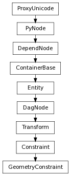

class counterpart of mel function geometryConstraint
Constrain an object’s position based on the shape of the target surface(s) at the closest point(s) to the object. A geometryConstraint takes as input one or more surface shapes (the targets) and a DAG transform node (the object). The geometryConstraint position constrained object such object lies on the surface of the target with the greatest weight value. If two targets have the same weight value then the one with the lowest index is chosen.
Sets the name of the constraint node to the specified name. Default name is constrainedObjectName_constraintType
Derived from mel command maya.cmds.geometryConstraint
Return the list of target objects.
Derived from mel command maya.cmds.geometryConstraint
Returns the names of the attributes that control the weight of the target objects. Aliases are returned in the same order as the targets are returned by the targetList flag
Derived from mel command maya.cmds.geometryConstraint
Specify the name of the animation layer where the constraint should be added. Flag can have multiple arguments, passed either as a tuple or a list.
Derived from mel command maya.cmds.geometryConstraint
removes the listed target(s) from the constraint.
Derived from mel command maya.cmds.geometryConstraint
Sets the name of the constraint node to the specified name. Default name is constrainedObjectName_constraintType
Derived from mel command maya.cmds.geometryConstraint